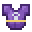
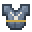

Sets
Every armour set - its pieces, its rarity, and the bonuses for wearing 2, 3 or 4 pieces, including the set ultimates.
How sets work
A set piece belongs to a named set. Wear several pieces of the same set and you get set bonuses:
- Pieces count only when worn in their own slot. An amulet that belongs to a set counts from an amulet slot.
- Bonuses stack. With 4 pieces on you also get the 2-piece and 3-piece bonuses.
- A piece below its item level doesn't count (see gear).
- Stat bonuses are bonus levels on your stats, shown in aqua on the sheet.
- Set ultimates: the big class sets give a new ultimate ability at 4 pieces, if your class (or subclass) matches the set. It joins your ability pool and takes the ultimate's key by default. You can move it like any other ability (see abilities). Take a piece off and the key falls back to its normal ability. Put it back on and the set ultimate returns.
- Every set piece tooltip lists the set's bonuses and, on class sets, the set ultimate.
Set and unique helmets are 3D headpieces: right-click with one in your hand to wear it (see armour).


Mixing sets
These smaller sets drop from monsters like other named items (see gear). They are Rare.
| Set | Pieces | 2 worn | 3 worn | 4 worn |
|---|---|---|---|---|
| Dawnguard | Dawnguard Helm, Plate, Greaves, Sabatons | +4 Vitality | - | +3 Fortitude and Dawnlight: slow regeneration |
| Nightstalker | Nightstalker Hood, Jerkin, Boots (3 pieces) | +3 Swiftness | Shadow Veil: invisible while sneaking | - |
| Wildwood | Wildwood Hood, Jerkin, Leggings, Boots | +4 Precision | - | +3 Swiftness and Hawkeye: while sneaking, enemies within 24 blocks glow |
| Clanblood | Clanblood Helm, Plate, Greaves, Sabatons | +4 Might | - | +3 Toughness and Bloodrage: below 5 hearts Strength; below 3 hearts Strength II and 2 hearts of Absorption for 6s (20s cooldown) |
| Tidecaller | Tidecaller Sou'wester, Oilskin, Waders, Sea Boots | +4 Arcana | - | Tideborn: Water Breathing and Dolphin's Grace; Regeneration while in water |
Stag of Varr
A Rare four-piece set (Helm, Plate, Greaves, Sabatons) earned as a reward from a quest line, not from monsters.
| 2 worn | 4 worn |
|---|---|
| +4 Vitality | Hold the Ford: every hostile within 6 blocks is a stack (max 5), each giving +1 armour and +4% melee damage. At 5 stacks you can't be knocked back. The stacks fall away 3s after the last hostile is gone. |
Class sets
Four pieces each (a crown, hood, helm or similar, a chest piece, leggings and boots). The set ultimate at 4 pieces works only for the class named. These sets are Mythic.
| Set | For | 2 worn | 3 worn | 4 worn: set ultimate |
|---|---|---|---|---|
| Archon | Mage | +5 Arcana | +4 Vitality, +3 Precision | Arcane Cataclysm: three rings of arcane blasts roll out from you. Each enemy hit refunds mana. Scales with Arcana. |
| Stormhawk | Archer | +5 Precision | +4 Swiftness, +3 Fortune | Rain of Arrows: spirit arrows rain on the spot you look at for 4s. Scales with Precision. |
| Shadowreaper | Rogue | +5 Ferocity | +4 Swiftness, +3 Precision | Thousand Cuts: blink between up to 6 enemies within 10 blocks, slashing each. Scales with Ferocity and Precision. |
| Warlord | Warrior | +5 Might | +4 Toughness, +3 Vitality | Avatar of War: 8s of more attack damage and armour, no knockback, and melee hits send a shockwave. Scales with Might. |
Subclass sets
These Legendary sets give their ultimate only to the subclass named (see classes).
| Set | For | 2 worn | 3 worn | 4 worn: set ultimate |
|---|---|---|---|---|
| Cindermantle | Pyromancer (Mage) | +5 Arcana | +4 Might, +3 Vitality | Inferno: 6s in which everything within 5 blocks burns and takes damage twice a second. Scales with Arcana. |
| Glacier | Frostbinder (Mage) | +5 Arcana | +4 Fortitude, +3 Steadfast | Absolute Zero: freeze every enemy within 8 blocks for 4s, then shatter them. Scales with Arcana. |
| Deadeye | Sniper (Archer) | +5 Precision | +4 Fortune, +3 Steadfast | Deadeye Focus: for 8s every arrow you land strikes a second time. Scales with Precision. |
| Galeweave | Windrunner (Archer) | +5 Swiftness | +4 Precision, +3 Vitality | Cyclone: a 4s tornado that drags enemies in and lifts them. Scales with Precision and Swiftness. |
| Veilshroud | Assassin (Rogue) | +5 Ferocity | +4 Precision, +3 Swiftness | Assassinate: blink behind your target and strike. Below 30% health it dies (not bosses). Scales with Ferocity and Precision. |
| Plaguebearer | Poisoner (Rogue) | +5 Precision | +4 Fortune, +3 Vitality | Pandemic: every enemy within 10 blocks falls sick for 8s, and it spreads. Scales with Precision and Fortune. |
| Duelist's Finery | Duelist (Rogue) | +5 Ferocity | +4 Swiftness, +3 Fortitude | En Garde: a 6s stance in which you are faster and better armoured, and melee hits deal bonus damage. Scales with Ferocity and Precision. |
| Sanctified Bulwark | Paladin (Warrior) | +5 Fortitude | +4 Vitality, +3 Might | Divine Aegis: for 8s you and nearby allies heal, and whatever hits you is smitten. Scales with Might and Vitality. |
| Bloodhowl | Berserker (Warrior) | +5 Might | +4 Ferocity, +3 Vitality | Blood Frenzy: 10s of more attack damage and speed, and melee hits heal you. Scales with Might and Ferocity. |
Sets for any class
| Set | Rarity | 2 worn | 3 worn | 4 worn |
|---|---|---|---|---|
| Wayfarer | Mythic | +2 to every combat stat (Might, Ferocity, Precision, Arcana, Vitality, Fortitude, Toughness, Swiftness, Steadfast, Fortune) | another +2 to each | Second Wind: below 3 hearts you go back to half health and get Regeneration, once a minute |
| Rubber Chicken Knight | Mythic | +5 Fortune | +4 Vitality, +3 Swiftness | Egg Barrage (set ultimate, any class): lob 20 eggs. Each one that hits bursts and hatches an angry chicken. Scales with Fortune. |
The class, subclass and any-class sets (Archon through Rubber Chicken Knight) are not part of the ordinary monster loot.
Only one ultimate at a time
You can only have one ultimate on your keys at a time: your class ultimate or a worn set's. See abilities.